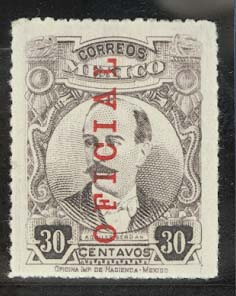

Note: on my website many of the
pictures can not be seen! They are of course present in the
catalogue;
contact me if you want to purchase it.
For stamps issued before 1915, click here.
1 c violet (arms, eagle, 2 types) 2 c green (statue of Cuauhtemoc) 3 c brown (Zaragoza) 4 c red (Morelos) 5 c orange (Madero) 10 c blue (Juarez) 40 c grey (map of Mexico) 40 c violet (1917) 1 P brown and black (Veracruz lighthouse) 1 P blue and black (1917) 5 P red and blue (Head post office in Mexico city) 5 P green and grey (1917)
The values 1 c, 2 c, 3 c, 4 c, 5 c, and 10 c exist rouletted. All values exist perforated.
Value of the stamps |
|||
vc = very common c = common * = not so common ** = uncommon |
*** = very uncommon R = rare RR = very rare RRR = extremely rare |
||
| Value | Unused | Used | Remarks |
| 1 c | c | c | Two types |
| 2 c | c | c | |
| 3 c | * | * | |
| 4 c | * | * | |
| 5 c | * | c | |
| 10 c | * | c | |
| 40 c grey | * | * | |
| 40 c violet | *** | * | |
| 1 P brown and black | ** | * | |
| 1 P blue and black | R | * | |
| 5 P red and blue | RR | RR | |
| 5 P green and grey | RR | RR | |
These stamps exist with 'OFICIAL' overprint.
10 c brown 10 c blue
It seems that these stamps were only valid for 1 day.
Value of the stamps |
|||
vc = very common c = common * = not so common ** = uncommon |
*** = very uncommon R = rare RR = very rare RRR = extremely rare |
||
| Value | Unused | Used | Remarks |
| 10 c brown | *** | R | |
| 10 c blue | ** | *** | |


1 c brown 2 c green 3 c brown 4 c red (Jesus Carranza) 5 c blue 10 c blue 20 c red 30 c grey
These stamps exist rouletted (most common) or perforated 12.
Value of the stamps |
|||
vc = very common c = common * = not so common ** = uncommon |
*** = very uncommon R = rare RR = very rare RRR = extremely rare |
||
| Value | Unused | Used | Remarks |
| 1 c | c | c | Also exist in greyish colour |
| 2 c | * | c | |
| 3 c | * | c | |
| 4 c | * | * | |
| 5 c | * | vc | |
| 10 c | ** | vc | |
| 20 c | *** | c | |
| 30 c | *** | * | |
Surcharged
'+3 c' (red) on 5 c blue '+5 c' (red) on 10 c blue
Value of the stamps |
|||
vc = very common c = common * = not so common ** = uncommon |
*** = very uncommon R = rare RR = very rare RRR = extremely rare |
||
| Value | Unused | Used | Remarks |
| 3 c + 5 c | *** | *** | |
| 5 c + 10 c | *** | *** | |
These stamps exist surcharged with a fancy pattern.
They also exist with 'OFICIAL' overprint in various types, example:

